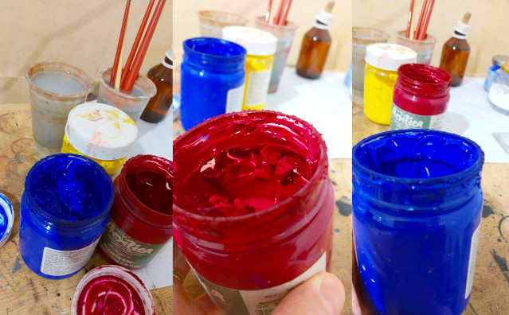
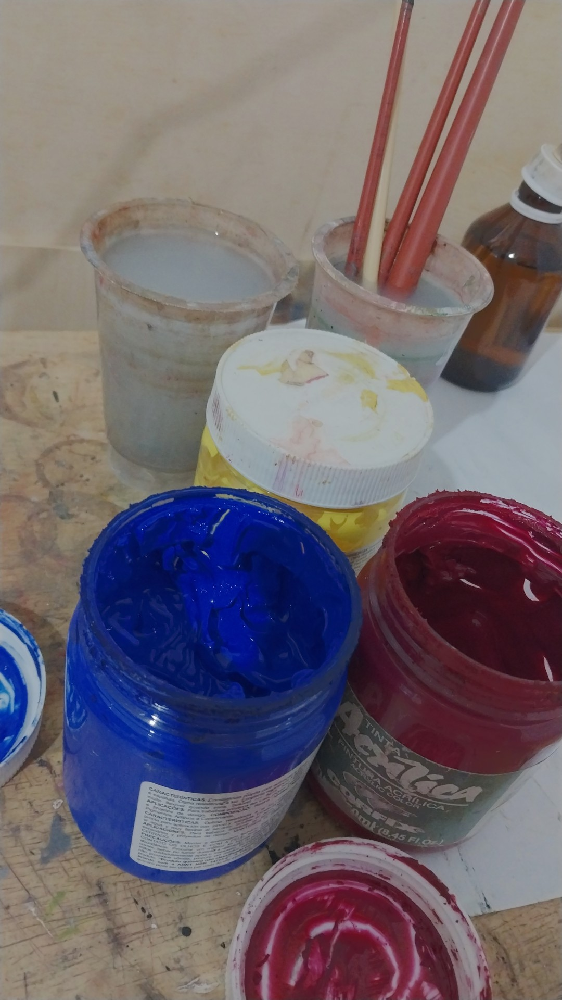

Por que começar com tinta acrílica?
A tinta acrílica é uma das formas mais acessíveis e versáteis de começar a pintar. Ela seca rápido, é fácil de limpar, permite correções e pode ser usada em diversas superfícies — ideal para quem quer experimentar sem tanta preocupação técnica. Com ela, dá para explorar cores vibrantes, texturas e camadas com liberdade. Para quem está começando, a acrílica oferece um equilíbrio perfeito entre controle e espontaneidade: você vê resultados na hora e pode seguir seu ritmo, errar, refazer e seguir criando.

Eu também comecei a pintar com acrílica. No começo eu travava — tinha a sensação de que eu ia estragar tudo. Mas logo percebi uma coisa: dava pra esperar secar e pintar por cima. Simples assim. Isso me deu uma liberdade enorme. Comecei a testar mais, errar sem sofrer, aprender do meu jeito. Aos poucos, o medo virou curiosidade. E foi assim que pintar deixou de ser um desafio e virou prazer. Ao longo dos meus estudos percebi que a acrílica tem algumas vantagens: –
- Seca rápido – Ideal para quem quer ver o resultado no mesmo dia.
- Fácil de usar – Fácil de limpar, não exige solventes tóxicos nem de cheiro forte, apenas água.
- Serve pra tudo – Preparar o suporte é bom, mas não é obrigatório com a acrílica. Dá pra pintar direto em papel, madeira, parede, tecidos entre outros.
- Compatível com diversos materiais. – Adere bem em diversas superfícies e se mistura perfeitamente com outras técnicas artísticas, permitindo pintar sobre outras bases, fazer colagens, criar texturas com riscos e aplicar camadas sobrepostas.
- Boa pra soltar a mão – permite erros, camadas e recomeços
É pra mim?
Este laboratório é pensado para quem quer explorar a pintura acrílica sem complicações - seja você iniciante sem experiência, alguém buscando um hobby terapêutico, um artista autodidata precisando de direção ou profissional e também pra quem trabalha com expressão criativa. Aqui você experimenta livremente e descobre que a tinta pode ser sua grande aliad."
Esse Laboratório é pensado especialmemte para três tipos de pessoas.- Entusiastas Se você quer iniciar uma atividade artística prazerosa, para descansar a cabeça e produzir obras de arte que sejam belas e originai esse laboratório é pra você.
- Artista profissional ou aspirante Se você quer aprimorar suas habilidades de pintura, com ou sem intenção de entrar no mercado de arte, esse laboratório é pra você.
- Apreciador de boa arte Fazer arte é a melhor maneira de entender arte. Se você deseja aprofundar seu conhecimento em pintura para aproveitar melhor as visitas a museus durante viagens ou começar a colecionar obras de arte, este Laboratório é para você.

Como funciona?
O laboratório inclui:
- Gravação da prática - No dia 23/09 às 20h, tivemos um encontro ao vivo para praticar juntos a preparação de têmpera ovo, explorando duas receitas diferentes:
- Receita clássica A receita usada no antigo Egito, Idade Média, Renascimento, pelo Volpi e por artistas contemporâneos
- Receita de secagem lenta A receita que foi a transição entre a têmpera ovo e a pintura à óleo
- Material escrito Você também vai receber o material em texto que será usados na aula. Esse material é o guia da aula, mas também vai te levar para outras experimentações, referências e outras possibilidades.
Bônus!
Receita de Tinta Óleo
Uma aula inteira sobre a transição entre a têmpera e a tinta óleo, com foco em te ensinar a fazer tinta óleo.
Agora, você pode adquirir a gravação desse workshop para aprender e praticar no seu próprio ritmo!
Laboratório têmpera ovo - receitas
Garanta sua vaga com preço promocional
De R$ 150,00
Por R$ 65,00
Quem será seu professor?

Victor Alarcon acredita que habilidade e autenticidade são essenciais para a prática artística. Também acredita que essas duas coisas não são dons, mas são frutos de estudo e treino.
Nos últimos anos tem se apropriado da antiga técnicas da têmpera ovo para usá-la como potente meio de produção artística contemporânea.
Desde 2022, ele compartilha seu conhecimento artístico na internet. Em 2018 iniciou sua segunda graduação, dessa vez no Instituto de Arte da UNESP, em artes visuais. Começo a produzir em obras 2019, com xilogravuras, expandindo para pinturas e esculturas nos anos seguintes.
Perguntas frequentes
Qual o dia e horário da aula?
A aula foi dia 23/09 às 20h00, mas você vai ter acesso à gravação pelo período de um ano
Vai ser online?
Sim aula foi online e agora você vai ter acesso à gravação.
É um encontro com um tema só?
Na gravação da aula que você terá acesso nos conversamos sobre duas receitas de têmpera ovo. Você também terá acesso à gravação de uma aula bônus, sobre como fazer tinta óleo.
O encontro ficou gravado?
Sim, o encontro ficou gravado e você vai ter acesso à ele por um ano.Na gravação da aula que você terá acesso nos conversamos sobre duas receitas de têmpera ovo. Você também terá acesso à gravação de uma aula bônus, sobre como fazer tinta óleo.